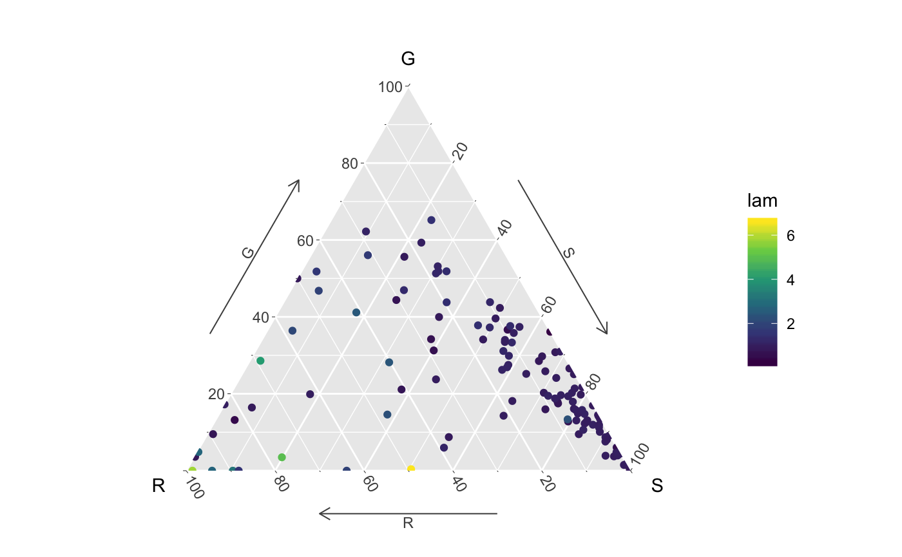

TernaryPlot.RmdHere we produce a ternary plot a la Silvertown & Franco (1993) with population growth rate as the “fourth” dimension. We will use functions from the popdemo, Rage and ggtern packages so first we need to load those:
Next, we will load the dataset, flag problematic data (non-ergodic matrices) and exclude them, like this:
data(Compadre)
Compadre <- cdb_flag(Compadre)
Compadre <- subset(Compadre, MatrixSplit == "Divided" & check_ergodic == TRUE)We can calculate elasticities of population growth rate to changes in the matrix elements using the elas function from the popdemo package. For example, the elasticity matrix for the first A matrix in this example database looks like this:
popdemo::elas(matA(Compadre)[[1]])
#> A1 A2 A3 A4
#> [1,] 0.1645631 0.06524073 0.02430743 0.03131899
#> [2,] 0.1208672 0.16721803 0.04892799 0.01682975
#> [3,] 0.0000000 0.07802604 0.11046976 0.02794895
#> [4,] 0.0000000 0.04335812 0.03273957 0.06818440We have split most matrices in COMPADRE into the constituent U, F and C matrices, which represent growth/survival, sexual reproduction and clonal reproduction respectively. Therefore, we can classify the elements of the matrix to growth processes (which we can further identify as stasis, progression, and retrogression), sexual reproduction, and clonal reproduction.
We can use the matrixElementPerturbation function from the Rage package to conduct this element-by-element elasticity analysis. The function outputs both sensitivities (prefixed with S) and elasticities (prefixed with E) as follows:
Rage::matrixElementPerturbation(matU = matU(Compadre)[[1]],
matF = matF(Compadre)[[1]],
matC = matC(Compadre)[[1]])
#> SStasis SRetrogression SProgression SFecundity SClonality EStasis
#> 1 1.000001 0.2391149 2.365109 0.351586 0 0.5104358
#> EProgression ERetrogression EFecundity EClonality
#> 1 0.2749906 0.07687694 0.1376969 0We can use a for loop to run through each set of matrices in turn to calculate the summed elasticity for survival (S), growth (G) and reproduction (R) like this:
Amats <- matA(Compadre)
Umats <- matU(Compadre)
Fmats <- matF(Compadre)
Cmats <- matC(Compadre)
output <- data.frame(S=rep(NA,length(Umats)),G=NA,R=NA,lam=NA)
for(i in 1:length(Umats)){
temp <- Rage::matrixElementPerturbation(Umats[[i]],
Fmats[[i]],
Cmats[[i]])
output$S[i] <- temp$EStasis + temp$ERetrogression
output$G[i] <- temp$EProgression
output$R[i] <- temp$EFecundity + temp$EClonality
#Calculate growth rate
output$lam[i] <- popdemo::eigs(Amats[[i]], "lambda")
}
#> Warning: All elements of matF are zero
#> Warning: All elements of matF are zero
#> Warning: All elements of matF are zero
#> Warning: All elements of matF are zero
#> Warning: All elements of matF are zero
#> Warning: All elements of matF are zero
#> Warning: All elements of matF are zero
#> Warning: All elements of matF are zero
#> Warning: All elements of matF are zero
#> Warning: All elements of matF are zeroLet’s take a look at this output:
head(output)
#> S G R lam
#> 1 0.58731274 0.27499063 0.137696890 1.0580286
#> 2 0.46765629 0.37791246 0.154347265 1.4118127
#> 3 0.97762061 0.01494911 0.007431082 0.9962044
#> 4 0.09347354 0.62204961 0.284476663 1.1241625
#> 5 0.90610402 0.09079782 0.003098288 0.9659322
#> 6 0.78256642 0.21743352 0.000000000 0.9154951Now we have elasticities for our three demographic processes we can place these onto a ternary plot. However, we should first scale the elasticities so that they sum to 1 - this is necessary because of possible rounding issues:
Now for the plot:
B<-ggtern::ggtern(data=output,aes(x = R,y=G,z=S,colour = lam)) +
geom_point() + scale_color_viridis_c()+
theme_showarrows() +theme_clockwise() +
NULL
B
Now you can try this, try using another variable, such as reactivity, or life expectancy as the “fourth” dimension instead of lambda.